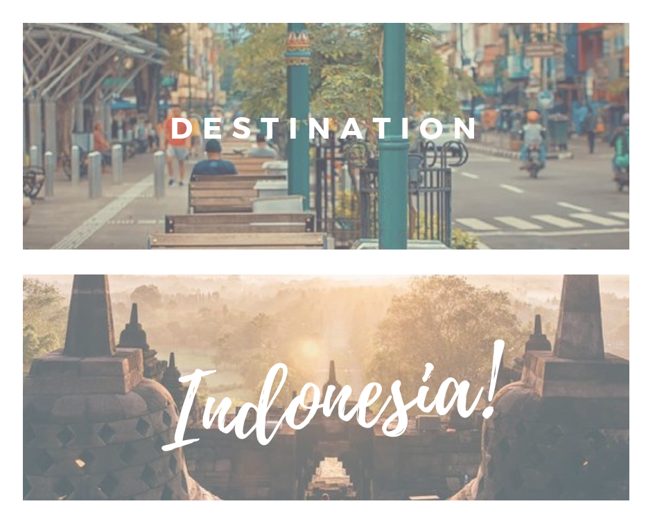

Where to Go in Indonesia

One of the main tourist attractions in Yogyakarta is Jalan Malioboro as a name of the street that become a iconic of Yogyakarta city. Malioboro situated in the downtown which an icon and also the busiest business district in the area. The street is alive 24 hours a day and extends for 1 km from North to South with historical Dutch colonial-era architecture, new modern building architecture mixed in with the Chinese and contemporary commercial districts.
Best way to explore the streets are by foot, just within walking distance from Stasiun Tugu (Tugu Railway Station) until southern end a junction, known as Nol Kilometer (Zero Kilometers). Another option is hiring a becak (pedicab) or the ubiquitous four-wheeled horse-drawn carts called “andong”.

The world’s biggest Buddhist sanctuary is a must-visit attraction, not only because of its religious significance but also for its beauty and charm. Built around the eighth century, this temple is a reflection of the country’s long and intricate history that covers religion, culture, customs, architecture, and more. Tourists can observe the ornate and mesmerizing stone carvings, gaze of the main grand structure, and immerse themselves in the surrounding scenic view that includes the sunrise, jungles, and faraway hills.